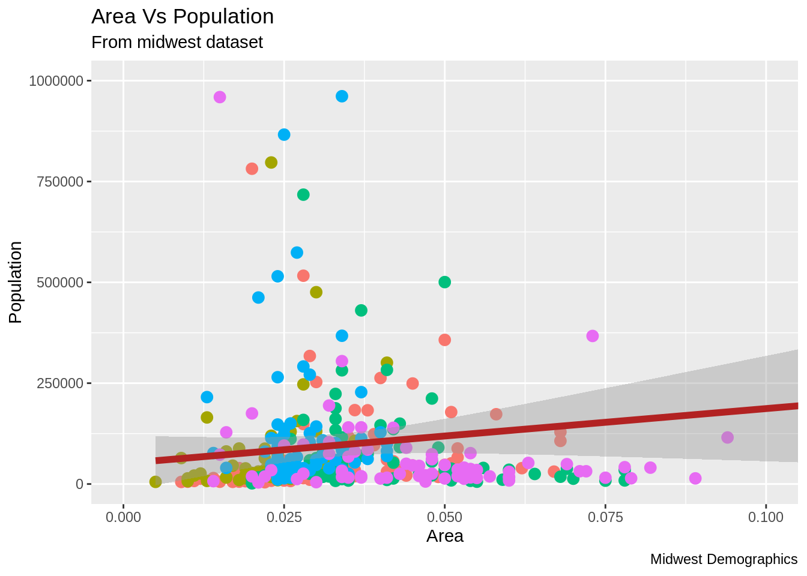

Chapter 24 Translation of ggplot2 tutorial in Korean
(Translated by) Kyungjin Kim find original source from below link
24.0.0.1 Original Source
Tutorial1: http://r-statistics.co/Complete-Ggplot2-Tutorial-Part1-With-R-Code.html
Tutorial2: http://r-statistics.co/Complete-Ggplot2-Tutorial-Part2-With-R-Code.html
24.1 TUTORIAL 1
24.1.1 ggplot2 구문(Syntax)의 이해
ggplot 구문은 초보자나 기본 그래픽을 이용하여 주로 작업을 해왔던 경우 이해하기에 어려움을 느낄 수 있습니다. 기본 그래픽(base graphic)과의 가장 큰 차이는 ggplot은 개별 벡터를 이용하지 않고 데이터 프레임을 이용하여 작동한다는 것입니다. 그래프를 그리기 위해 필요한 모든 데이터는 데이터 프레임에 포함되어 있거나, geoms(기하학 적인 원소, geometric element) 생성시 각각 필요한 데이터로 제공될 수 있습니다. 두번째 주목할 만한 특징은 ggplot() 함수를 사용하여 생성된 기존 그래프에 더 많은 레이어(테마)를 추가하여 기존 그래프를 향상시킬 수 있다는 점입니다. 아래는 ggplot2 package에 포함된 “midwest” 데이터셋을 이용하여 초기화 한 기본 ggplot 그래프입니다.
# 셋업
options(scipen=999) # 과학적 표기법 끄기 (e,g. 1e+06)
library(ggplot2)
data("midwest", package = "ggplot2") # 데이터 불러오기
# midwest <- read.csv("http://goo.gl/G1K41K") # 데이터 소스
# Init Ggplot
ggplot(midwest, aes(x=area, y=poptotal)) # Midwest 데이터셋 중 area와 poptotal 을 각각 x, y column의 그래프로 사용
빈 ggplot이 그려집니다. X와 Y (area, poptotal)가 지정되어 있지만 아직 그래프 안에는 어떤 포인트나 선도 그려져 있지 않습니다. 이것은 ggplot이 사용자가 산점도(scatterplot)를 그릴지 선차트(line chart)를 그릴지 지정하지 않았기 때문입니다. 현재로선 사용자는 어떤 데이터 셋을 쓸 것이고 데이터 셋으로부터 어떤 열(column)을 X와 Y 값에 쓸 것 인지 지정했습니다. 아직 어떤 점을 그리도록 명시하지는 않았습니다. 참고할 사항은 aes() 함수가 X와 Y값 지정에 사용되었다는 점입니다. 데이터프레임 소스에 포함되는 모든 정보는 시각화를 위해서 aes() 함수를 통하여 지정되어야 합니다.
24.1.2 간단한 산점도(scatterplot)을 만드는 방법
상기의 빈그림에 geom_point 라는 기하학 레이어를 추가하여 산점도를 그려보겠습니다.

Geom_point 함수를 사용하여 상기의 산점도를 얻었습니다. 하지만, 상기의 산점도는 그래프 제목이나 축 제목 등 기본 구성요소가 빠져 있습니다. 또한, 대부분의 포인트들이 그래프의 하단에 집중되어 있어 시각화에 그리 좋은 방법은 아니라고 느껴집니다. 이런 점들을 보완하는 방법을 다음 단계에서 배울 것 입니다. Geom_point()와 같이 튜토리얼 후속 부분에서 보게 될 기하학 레이어가 많이 있습니다. 지금은 스무딩 레이어를 추가하겠습니다. 메소드가 선형 모델로 셋업 되어 있으므로, geom_smooth는 데이터에 최적화된 선을 그립니다.
library(ggplot2)
g <- ggplot(midwest, aes(x=area, y=poptotal)) + geom_point() + geom_smooth(method="lm") # set se=FALSE 컨피던스 밴드를 끔
plot(g)
데이터에 맞는 최적의 선은 파란색 선 입니다. Geom_smooth 함수에 어떤 다른 메소드 옵션이 있는지 혹시 찾을 수 있습니까? 상기에도 말했듯이 대부분의 점이 그래프 하부에 밀집되어 있는 이 그래프는 보기에 썩 좋아 보이지는 않습니다. Y 축을 아래 절반만 나타날 수 있게 제한을 걸어보도록 하겠습니다.
24.1.3 X축, Y축 범위를 조정하는 방법
X축 및 Y축 범위의 조정은 두가지 방법으로 이루어 질 수 있습니다.
방법 1. 범위 밖의 포인트 삭제
이 방법을 사용하면 원본 데이터와 비교했을 때 다른 최적의 선이 찾아질 것입니다. 방법 1은 xlim() 과 ylim() 함수를 사용하여 이루어 질 수 있습니다. 길이가 2인 숫자벡터(최대값과 최소값)을 함수 전달하여 지정 축의 최대/최소 범위를 지정할 수 있습니다.
library(ggplot2)
g <- ggplot(midwest, aes(x=area, y=poptotal)) + geom_point() + geom_smooth(method="lm") # set se=FALSE
# 범위 밖의 데이터 포인트 삭제
g + xlim(c(0, 0.1)) + ylim(c(0, 1000000)) # 포인트 삭제
이 방법을 사용했을 경우, 차트는 처음부터 만들어 진 것이 아니라 g의 위에 만들어 진 것입니다. 이전의 원본 그래프는 ggplot 객체인 g에 저장되어 원본그래프를 재생산 할 때 마다 사용됩니다. Ggplot을 사용하면 레이어, themes 와 세팅들을 그래프에 추가할 수 있습니다. 최적의 선이 원본 그래프와 비교하였을 때에 수평해진 것을 눈치 채셨습니까? Xlim()과 ylim()을 사용하면 범위 밖의 데이터들은 최적의 선을 찾을 때에 더 이상 고려 대상이 되지 않습니다. 이 특징은 최적의 선이 outliers의 존재 유무에 따라 바뀌는 지를 확인하고 싶을 때 유용할 수 있습니다.
방법 2: 확대(zooming in)
다른 방법은 데이터를 삭제하지 않고 관심 영역을 확대하여 X와 Y축 범위를 제한하는 것입니다. 이 방식은 coord_cartesian() 함수를 사용하여 이루어 질 수 있습니다. G1객체에 먼저 상기의 그래프를 저장하겠습니다.
library(ggplot2)
g <- ggplot(midwest, aes(x=area, y=poptotal)) + geom_point() + geom_smooth(method="lm") # set se=FALSE
# 데이터 삭제 없이 범위 확대
# 최적의 선은 원본 그래프와 동일
g1 <- g + coord_cartesian(xlim=c(0,0.1), ylim=c(0, 1000000)) # 확대
plot(g1)
24.1.4 그래프 제목 및 축 제목 변경
상기의 그래프를 g1 객체에 저장하였습니다. 이제 X축 및 Y축 제목과 그래프 제목을 추가해 보겠습니다. Labs() 함수에 title, x, y 정보를 입력함으로써 그래프 제목 및 축 제목 변경을 할 수 있습니다. 다른 방법은 ggtitle(), xlab(), ylab() 함수를 사용하여 변경하는 것입니다.
library(ggplot2)
g <- ggplot(midwest, aes(x=area, y=poptotal)) + geom_point() + geom_smooth(method="lm") # set se=FALSE to turnoff confidence bands
g1 <- g + coord_cartesian(xlim=c(0,0.1), ylim=c(0, 1000000)) #확대
# 그래프 제목/축 제목 추가
g1 + labs(title="Area Vs Population", subtitle="From midwest dataset", y="Population", x="Area", caption="Midwest Demographics")
# 또는
g1 + ggtitle("Area Vs Population", subtitle="From midwest dataset") + xlab("Area") + ylab("Population")
1-4까지 방법을 정리한 코드는 하기와 같습니다.
# Full Plot call
library(ggplot2)
ggplot(midwest, aes(x=area, y=poptotal)) +
geom_point() +
geom_smooth(method="lm") +
coord_cartesian(xlim=c(0,0.1), ylim=c(0, 1000000)) +
labs(title="Area Vs Population", subtitle="From midwest dataset", y="Population", x="Area", caption="Midwest Demographics")24.1.5 데이터 포인트의 색상 및 크기 변경
정적으로 색상과 크기를 변경하는 방법은 무엇입니까?
Geom 레이어의 Aesthetic(aes)를 변경하여 우리는 데이터 포인트의 색상과 크기를 변경할 수 있습니다. 먼저 데이터 포인트와 선의 색상을 정적인 값(고정된 값)으로 변경해 보겠습니다.
library(ggplot2)
ggplot(midwest, aes(x=area, y=poptotal)) +
geom_point(col="steelblue", size=3) + # 정적 색상과 크기 변경
geom_smooth(method="lm", col="firebrick") + # 선의 색상 변경
coord_cartesian(xlim=c(0, 0.1), ylim=c(0, 1000000)) +
labs(title="Area Vs Population", subtitle="From midwest dataset", y="Population", x="Area", caption="Midwest Demographics")데이터 프레임의 다른 열의 데이터의 범주를 반영하여 색상을 적용하는 방법은 무엇입니까? 다른 열의 데이터 범주를 반영한 색상을 그래프에 적용하려면 Aes() 함수의 col에 적용하고자 하는 열의 이름이 지정되어야 합니다.
library(ggplot2)
gg <- ggplot(midwest, aes(x=area, y=poptotal)) +
geom_point(aes(col=state), size=3) + # state 열 범주를 이용하여 색상 반영
geom_smooth(method="lm", col="firebrick", size=2) +
coord_cartesian(xlim=c(0, 0.1), ylim=c(0, 1000000)) +
labs(title="Area Vs Population", subtitle="From midwest dataset", y="Population", x="Area", caption="Midwest Demographics")
plot(gg)
이제, 각각의 데이터 포인트들은 state 열의 범주에 의거해서 색상이 지정되어 있습니다. 색상(color) 뿐만이 아니라, 크기, 모양, 스트로크와 색상 채움까지 데이터의 그룹화를 위해 이용될 수 있습니다. 이것을 이용 시 범례가 자동적으로 추가됩니다. Theme() 함수를 사용하여 범례를 삭제할 수 있습니다.

또한, 색상 팔레트도 변경할 수 있습니다.

색상 팔레트는 RColorBrewer 패키지에서 확인 할 수 있습니다.
## maxcolors category colorblind
## BrBG 11 div TRUE
## PiYG 11 div TRUE
## PRGn 11 div TRUE
## PuOr 11 div TRUE
## RdBu 11 div TRUE
## RdGy 11 div FALSE
## RdYlBu 11 div TRUE
## RdYlGn 11 div FALSE
## Spectral 11 div FALSE
## Accent 8 qual FALSE#> maxcolors category colorblind
#> BrBG 11 div TRUE
#> PiYG 11 div TRUE
#> PRGn 11 div TRUE
#> PuOr 11 div TRUE
#> RdBu 11 div TRUE
#> RdGy 11 div FALSE
#> RdYlBu 11 div TRUE
#> RdYlGn 11 div FALSE
#> Spectral 11 div FALSE
#> Accent 8 qual FALSE24.1.6 X축 텍스트와 눈금의 위치 변경
X축 및 Y축 텍스트와 위치를 변경하는 방법은 무엇입니까? 이제 X 및 Y축 텍스트와 위치를 변경하는 방법을 알아보겠습니다. 이 방법은 breaks와 labels를 이용하여 이루어 집니다.
24.1.6.1 브레이크(breaks) 지정
breaks는 X 축 변수와 같은 스케일로 지정되어야 합니다. 예시에서는 scale_x_continuous가 사용되었는데, x축의 변수가 연속형 변수이기 때문입니다. 마찬가지로 date 변수라면 sacle_x_date 가 사용될 수 있습니다. y축에는 scale_y_continous가 사용될 수 있습니다.
library(ggplot2)
# Base plot
gg <- ggplot(midwest, aes(x=area, y=poptotal)) +
geom_point(aes(col=state), size=3) + #state 범례에 맞게 색상 조정.
geom_smooth(method="lm", col="firebrick", size=2) +
coord_cartesian(xlim=c(0, 0.1), ylim=c(0, 1000000)) +
labs(title="Area Vs Population", subtitle="From midwest dataset", y="Population", x="Area", caption="Midwest Demographics")
# breaks 변경
gg + scale_x_continuous(breaks=seq(0, 0.1, 0.01))
- 레이블을 축 ticks를 통해 변경할 수 있습니다. 레이블은 breaks와 같은 길이의 벡터를 입력하여야 합니다. 하기의 코드에서는 labels가 알파벳 a 부터 k로 지정되었습니다. (데이터와 연관 있는 레이블링은 아닙니다).
library(ggplot2)
# 기본플랏
gg <- ggplot(midwest, aes(x=area, y=poptotal)) +
geom_point(aes(col=state), size=3) + # state 범례에 맞추어 데이터색상 변경
geom_smooth(method="lm", col="firebrick", size=2) +
coord_cartesian(xlim=c(0, 0.1), ylim=c(0, 1000000)) +
labs(title="Area Vs Population", subtitle="From midwest dataset", y="Population", x="Area", caption="Midwest Demographics")
# breaks와 label 변경
gg + scale_x_continuous(breaks=seq(0, 0.1, 0.01), labels = letters[1:11])
- 레이블을 축 ticks를 통해 변경할 수 있습니다. 레이블은 breaks와 같은 길이의 벡터를 입력하여야 합니다. 하기의 코드에서는 labels가 알파벳 a 부터 k로 지정되었습니다. (데이터와 연관 있는 레이블링은 아닙니다).
library(ggplot2)
# 기본플랏
gg <- ggplot(midwest, aes(x=area, y=poptotal)) +
geom_point(aes(col=state), size=3) + # state 범례에 맞추어 데이터색상 변경
geom_smooth(method="lm", col="firebrick", size=2) +
coord_cartesian(xlim=c(0, 0.1), ylim=c(0, 1000000)) +
labs(title="Area Vs Population", subtitle="From midwest dataset", y="Population", x="Area", caption="Midwest Demographics")
# breaks와 label 변경
gg + scale_x_continuous(breaks=seq(0, 0.1, 0.01), labels = letters[1:11])
x축의 scale을 역순으로 변경하고 싶다면 scale_x_reverse()를 사용할 수 있습니다.
library(ggplot2)
gg <- ggplot(midwest, aes(x=area, y=poptotal)) +
geom_point(aes(col=state), size=3) + # Set color to vary based on state categories.
geom_smooth(method="lm", col="firebrick", size=2) +
coord_cartesian(xlim=c(0, 0.1), ylim=c(0, 1000000)) +
labs(title="Area Vs Population", subtitle="From midwest dataset", y="Population", x="Area", caption="Midwest Demographics")
# X축 스케일 역순으로 변경
gg + scale_x_reverse()
원본 값을 사용하여 사용자 지정 축 레이블을 지정하는 방법은 무엇입니까? Breaks를 이용하여 Y 축 텍스트와 X, Y 축 레이블을 바꿔 보겠습니다. sprinf()를 이용한 방법1과 (%로 하기 예시에서 포맷 하였습니다) 사용자 지정 함수를 이용한 방법2 (1000’s 를 1K 스케일로 변경), 총 2가지 방법이 사용되었습니다.
library(ggplot2)
# Base Plot
gg <- ggplot(midwest, aes(x=area, y=poptotal)) +
geom_point(aes(col=state), size=3) + # Set color to vary based on state categories.
geom_smooth(method="lm", col="firebrick", size=2) +
coord_cartesian(xlim=c(0, 0.1), ylim=c(0, 1000000)) +
labs(title="Area Vs Population", subtitle="From midwest dataset", y="Population", x="Area", caption="Midwest Demographics")
# 축 텍스트 변경
gg + scale_x_continuous(breaks=seq(0, 0.1, 0.01), labels = sprintf("%1.2f%%", seq(0, 0.1, 0.01))) +
scale_y_continuous(breaks=seq(0, 1000000, 200000), labels = function(x){paste0(x/1000, 'K')})
사전 제작된 themes을 이용하여 모든 theme을 사용자 지정하는 방법은 무엇입니까?
마지막으로 각각의 구성 요소를 변경하는 방법 대신에 모든 theme을 사전 제작된 theme을 이용하여 변경하는 방법을 알아보겠습니다. 도움 페이지에 ?theme_bw를 입력하면 사전 제작된 모든 theme을 보여줍니다.
이 방법 또한 여러가지 방식으로 진행될 수 있습니다. Theme_Set()함수를 이용하여 theme을 ggplot을 그리기 전에 지정할 수 있습니다. 이 방식을 이용하면 향후 그려지는 모든 그래프가 영향을 받는 다는 사실을 인지하여야 합니다. 또한 ggplot을 먼저 그리고 theme_Bw()함수를 이용하여 전체 theme 세팅을 변경할 수 있습니다.
library(ggplot2)
# Base plot
gg <- ggplot(midwest, aes(x=area, y=poptotal)) +
geom_point(aes(col=state), size=3) + # Set color to vary based on state categories.
geom_smooth(method="lm", col="firebrick", size=2) +
coord_cartesian(xlim=c(0, 0.1), ylim=c(0, 1000000)) +
labs(title="Area Vs Population", subtitle="From midwest dataset", y="Population", x="Area", caption="Midwest Demographics")
gg <- gg + scale_x_continuous(breaks=seq(0, 0.1, 0.01))
# 방법 1: theme_set() 이용
theme_set(theme_classic()) # not run
gg


24.2 TUTORIAL 2
24.3 파트2: 시각화(look)와 느낌(feel)의 사용자 지정
이 튜토리얼 에서는 그래프에 있어서 6가지의 가장 중요한 심미적 요소들을 사용자 지정하는 방법을 다루려고 합니다. 종합하여 말하자면, 이 튜토리얼은 그래프의 사용자 지정 작업을 수행하는 자세한 방식에 대해 포괄적인 목록을 제공합니다.
- 플롯 및 축 제목 추가
- 범례 수정 o 범례 제목을 변경하는 방법 o 범례 레이블 및 포인트 색상을 변경하는 방법 o 범례 순서를 변경하는 방법 o 범례 제목, 텍스트 및 키 스타일 지정 방법 o 범례 위치를 변경하는 방법
- 텍스트, 레이블 및 주석 추가 o 포인트 주변에 텍스트 및 레이블을 추가하는 방법 o 플롯 내부에 사용자 지정 주석을 추가하는 방법
- X 및 Y 축 뒤집기 및 반전
- 패싯(facet) : 하나의 그림 내에 여러 플롯 그리기 o 패싯 랩 o 패싯 그리드
- 플롯 배경, 장축 및 보조 축 수정 o 플롯 배경을 변경하는 방법 o 주 및 부 그리드, 테두리, 축 제목, 텍스트 및 눈금을 제거하는 방법 o 백그라운드에서 이미지를 추가하는 방법 o 테마 구성 요소의 상속 구조
튜토리얼 1에서 사용한 Midwest 데이터 셋을 이용하여 만들어진 인구에 대한 지역의 산점도로 튜토리얼을 시작하겠습니다. 데이터 포인트의 색상과 크기는 각각 state(categorical)과 popdensity(연속적) 열에 의거하여 정해졌습니다.
하기의 그래프는 제목, 축 레이블, 범례 등 필수 요소들이 잘 셋업이 되어 있습니다. 하지만 시각화를 변경할 수 있는 방법은 무엇입니까?
시각화와 관련된 대부분의 조건들은 theme() 함수를 통해서 달성될 수 있습니다. Theme() 함수는 대량의 인수를 받는 것을 허용합니다. ?theme을 R console에 입력하면 theme 함수와 관련한 정보를 얻을 수 있습니다.
# 셋업
options(scipen=999)
library(ggplot2)
data("midwest", package = "ggplot2")
theme_set(theme_bw())
# midwest <- read.csv("http://goo.gl/G1K41K") # 데이터 소스
# 그래프 요소 추가
gg <- ggplot(midwest, aes(x=area, y=poptotal)) +
geom_point(aes(col=state, size=popdensity)) +
geom_smooth(method="loess", se=F) + xlim(c(0, 0.1)) + ylim(c(0, 500000)) +
labs(title="Area Vs Population", y="Population", x="Area", caption="Source: midwest")
# 그래프 시각화
plot(gg)
Theme() 함수에 전달된 인수들은 element_type() 함수들을 사용하여 설정해야 합니다. Element_type은 4가지의 함수들로 구성됩니다. 1. Element_text(): 제목, 부제목, 캡션 등 텍스트 항목 관련 설정 시 사용 2. Element_line(): 축선, 주 그리드 라인, 부 그리드 라인 등 선 항목 관련 설정 시 사용 3. Elemet_rect(): 직사각형 구성 요소 (플랏, 패널) 등 설정 시 사용 4. Element_blank(): theme 아이템 표시를 끌 때 사용
24.3.1 플롯 및 축 제목 추가
플롯과 축 텍스트는 플롯 theme의 일부입니다. 따라서 theme() 함수를 이용하여 수정할 수 있습니다. Theme() 함수는 상기 4개의 element_type() 함수중 하나를 인수로 받습니다. 플롯 및 축 제목은 텍스트 구성 요소 이므로 element_text(), 플롯 및 축 제목을 수정 시 element_text()가 사용됩니다.
library(ggplot2)
# 기본 플랏
gg <- ggplot(midwest, aes(x=area, y=poptotal)) +
geom_point(aes(col=state, size=popdensity)) +
geom_smooth(method="loess", se=F) + xlim(c(0, 0.1)) + ylim(c(0, 500000)) +
labs(title="Area Vs Population", y="Population", x="Area", caption="Source: midwest")
# 구성요소 수정
gg + theme(plot.title=element_text(size=20,
face="bold",
family="American Typewriter",
color="tomato",
hjust=0.5,
lineheight=1.2), # 제목
plot.subtitle=element_text(size=15,
family="American Typewriter",
face="bold",
hjust=0.5), # 부제목
plot.caption=element_text(size=15), # 캡션
axis.title.x=element_text(vjust=10,
size=15), # X axis title
axis.title.y=element_text(size=15), # Y axis title
axis.text.x=element_text(size=10,
angle = 30,
vjust=.5), # X axis text
axis.text.y=element_text(size=10)) # Y axis text
• vjust, 제목 (또는 레이블)과 플롯 사이의 수직 간격을 제어합니다. • hjust, 수평 간격을 제어합니다. 0.5로 설정하면 제목이 중앙에 위치합니다. • family, 새 글꼴을 설정하는 데 사용됩니다. • face, 글꼴 ( “plain”, “italic”, “bold”, “bold.italic”)을 설정합니다.
24.3.2 범례(legend) 변경
Geom과 관련된(포인트, 선, 바 차트 등) 심미적 요소들이(aes; 크기, 채움, 색상, 모양 등) 데이터 프레임의 다른 열에 비롯되어 변경될 때 범례는 자동적으로 그려집니다. 심미적 요소가 정적(static)일 때 geom을 생성한다면 범례는 자동적으로 그려지지 않습니다. 이러한 경우에는 사용자가 수동으로 범례를 생성해야 합니다. 하기 예시는 범례가 자동적으로 그려졌을 때 입니다.
범례 제목을 변경하는 방법
방법1: lab() 함수 사용
library(ggplot2)
# 기본 플랏
gg <- ggplot(midwest, aes(x=area, y=poptotal)) +
geom_point(aes(col=state, size=popdensity)) +
geom_smooth(method="loess", se=F) + xlim(c(0, 0.1)) + ylim(c(0, 500000)) +
labs(title="Area Vs Population", y="Population", x="Area", caption="Source: midwest")
gg + labs(color="State", size="Density") # 범례 제목 변경
방법2: guides() 함수 사용
library(ggplot2)
# 기본 플랏
gg <- ggplot(midwest, aes(x=area, y=poptotal)) +
geom_point(aes(col=state, size=popdensity)) +
geom_smooth(method="loess", se=F) + xlim(c(0, 0.1)) + ylim(c(0, 500000)) +
labs(title="Area Vs Population", y="Population", x="Area", caption="Source: midwest")
gg <- gg + guides(color=guide_legend("State"), size=guide_legend("Density")) # 범례 제목 변경
plot(gg)
방법3: scale_aesthetic_vartype() 형식 사용
Scale_aesthetic_Vartype() 형식을 사용하면 특정 aes와 관련된 범례는 키고 끄는 것이 가능해집니다. 인자 gulide = false로 설정하면 이 것이 가능해집니다. 예를 들어, 범례의 크기가 연속적인 변수라면, scale_size_continous() 함수가 사용되어야 적절할 것입니다. 카테고리 변수에 의거한 범례의 크기를 알고 있다면, 어떤 함수를 사용해야 하는지 추측할 수 있습니까?
library(ggplot2)
# 기본 플랏
gg <- ggplot(midwest, aes(x=area, y=poptotal)) +
geom_point(aes(col=state, size=popdensity)) +
geom_smooth(method="loess", se=F) + xlim(c(0, 0.1)) + ylim(c(0, 500000)) +
labs(title="Area Vs Population", y="Population", x="Area", caption="Source: midwest")
# 범례 변경
gg + scale_color_discrete(name="State") + scale_size_continuous(name = "Density", guide = FALSE) # turn off legend for size
범주에 대한 각각의 범례 색상 변경 방법
이 작업은 scale_aesthetic_manual() 기능을 사용하여 수행할 수 있습니다. 새 범례 레이블은 레이블 인수에 대한 문자형 벡터로 공급됩니다. 범주의 색상을 변경하려면 values 인수를 설정함으로 이 작업을 실행할 수 있습니다.
library(ggplot2)
# Base Plot
gg <- ggplot(midwest, aes(x=area, y=poptotal)) +
geom_point(aes(col=state, size=popdensity)) +
geom_smooth(method="loess", se=F) + xlim(c(0, 0.1)) + ylim(c(0, 500000)) +
labs(title="Area Vs Population", y="Population", x="Area", caption="Source: midwest")
gg + scale_color_manual(name="State",
labels = c("Illinois",
"Indiana",
"Michigan",
"Ohio",
"Wisconsin"),
values = c("IL"="blue",
"IN"="red",
"MI"="green",
"OH"="brown",
"WI"="orange"))
범례의 순서 변경
State 열의 색에 대한 범례를 크기에 대한 범례보다 먼저 보여주고 싶을 때는 guides() 함수를 이용할 수 있습니다. 범례의 순서는 order 인수를 변경함으로써 설정할 수 있습니다. 범례 안의 레이블의 위치를 변경하고 싶다면 전 예시의 순서를 따라 변경하면 됩니다.
library(ggplot2)
# Base Plot
gg <- ggplot(midwest, aes(x=area, y=poptotal)) +
geom_point(aes(col=state, size=popdensity)) +
geom_smooth(method="loess", se=F) + xlim(c(0, 0.1)) + ylim(c(0, 500000)) +
labs(title="Area Vs Population", y="Population", x="Area", caption="Source: midwest")
gg + guides(colour = guide_legend(order = 1),
size = guide_legend(order = 2))
범례 제목, 텍스트 및 키 스타일 지정 방법
범례 제목, 텍스트, 키 및 가이드의 스타일도 조정할 수 있습니다. 범례의 키는 도형의 성질을 띄기 때문에 element_rect() 함수를 이용하여 변경할 수 있습니다.
library(ggplot2)
# Base Plot
gg <- ggplot(midwest, aes(x=area, y=poptotal)) +
geom_point(aes(col=state, size=popdensity)) +
geom_smooth(method="loess", se=F) + xlim(c(0, 0.1)) + ylim(c(0, 500000)) +
labs(title="Area Vs Population", y="Population", x="Area", caption="Source: midwest")
gg + theme(legend.title = element_text(size=12, color = "firebrick"),
legend.text = element_text(size=10),
legend.key=element_rect(fill='springgreen')) +
guides(colour = guide_legend(override.aes = list(size=2, stroke=1.5))) 
범례 제거 및 위치 변경
범례의 위치는 theme의 구성 요소입니다. 따라서 theme() 함수를 이용하여 변경이 가능합니다. 만약 범례를 플랏 안에 배치하려면 범례의 힌지 포인트를 legend.justification 인수를 이용하여 제어할 수 있습니다. Legend.position 인자는 차트의 영역 내에 위치한 X,Y의 위치입니다. (0,0)은 왼쪽 아래이고 (1,1)는 오른쪽 위 입니다. Legend.justification 인자는 범례 내의 힌지 포인트를 나타냅니다.
library(ggplot2)
# Base Plot
gg <- ggplot(midwest, aes(x=area, y=poptotal)) +
geom_point(aes(col=state, size=popdensity)) +
geom_smooth(method="loess", se=F) + xlim(c(0, 0.1)) + ylim(c(0, 500000)) +
labs(title="Area Vs Population", y="Population", x="Area", caption="Source: midwest")
# 범례 없음
gg + theme(legend.position="None") + labs(subtitle="No Legend")

#아래 수평 범례
gg + theme(legend.position="bottom", legend.box = "horizontal") + labs(subtitle="Legend at Bottom")
# 플랏 안의 오른쪽 아래
gg + theme(legend.title = element_text(size=12, color = "salmon", face="bold"),
legend.justification=c(1,0),
legend.position=c(0.95, 0.05),
legend.background = element_blank(),
legend.key = element_blank()) +
labs(subtitle="Legend: Bottom-Right Inside the Plot")
# 플랏안의 왼쪽 위 범례
gg + theme(legend.title = element_text(size=12, color = "salmon", face="bold"),
legend.justification=c(0,1),
legend.position=c(0.05, 0.95),
legend.background = element_blank(),
legend.key = element_blank()) +
labs(subtitle="Legend: Top-Left Inside the Plot")
24.3.3 텍스트, 레이블 및 주석 추가
포인트 주변에 텍스트 및 레이블을 추가하는 방법
인구가 400K를 초과하는 카운티에만 텍스트를 추가해 보겠습니다. 이를 실행하기 위해서 Midwest_sub이라는 서브 데이터프레임을 생성합니다. 이 데이터프레임은 400K 인구 초과하는 카운티만 포함되어 있습니다. 그런 다음, geom_text 와 geom_label을 이 데이터 프레임을 이용하여 생성합니다. 이는 범례(geom_label)에 상기에 언급한 특정 조건을 충족하는 카운티만 포함되게 할 것입니다.
library(ggplot2)
# 조건에 충족하는 카운티만 저장
midwest_sub <- midwest[midwest$poptotal > 300000, ]
midwest_sub$large_county <- ifelse(midwest_sub$poptotal > 300000, midwest_sub$county, "")
# Base Plot
gg <- ggplot(midwest, aes(x=area, y=poptotal)) +
geom_point(aes(col=state, size=popdensity)) +
geom_smooth(method="loess", se=F) + xlim(c(0, 0.1)) + ylim(c(0, 500000)) +
labs(title="Area Vs Population", y="Population", x="Area", caption="Source: midwest")
# 텍스트 및 범례 저장
gg + geom_text(aes(label=large_county), size=2, data=midwest_sub) + labs(subtitle="With ggplot2::geom_text") + theme(legend.position = "None") # text
gg + geom_label(aes(label=large_county), size=2, data=midwest_sub, alpha=0.25) + labs(subtitle="With ggplot2::geom_label") + theme(legend.position = "None") # label
#(ggrepel 패키지 사용) 텍스트 및 범례 저장
library(ggrepel)
gg + geom_text_repel(aes(label=large_county), size=2, data=midwest_sub) + labs(subtitle="With ggrepel::geom_text_repel") + theme(legend.position = "None") # textgg + geom_label_repel(aes(label=large_county), size=2, data=midwest_sub) + labs(subtitle="With ggrepel::geom_label_repel") + theme(legend.position = "None") # label플롯 내 어디서나 주석을 추가하는 방법
차트의 특정 포인트에 주석을 추가하는 방법을 알아보겠습니다. Annotation_Custom() 함수에서 grob 인수를 설정함으로써 이는 수행될 수 있습니다. Grob을 생성하고 grid 패키지르 이용하여 원하는 텍스트가 들어있는 플랏을 만들어 보겠습니다.
library(ggplot2)
# Base Plot
gg <- ggplot(midwest, aes(x=area, y=poptotal)) +
geom_point(aes(col=state, size=popdensity)) +
geom_smooth(method="loess", se=F) + xlim(c(0, 0.1)) + ylim(c(0, 500000)) +
labs(title="Area Vs Population", y="Population", x="Area", caption="Source: midwest")
# 정의 및 주석 추가
library(grid)
my_text <- "This text is at x=0.7 and y=0.8!"
my_grob = grid.text(my_text, x=0.7, y=0.8, gp=gpar(col="firebrick", fontsize=14, fontface="bold"))

24.3.4 X축 및 Y축 뒤집기(Reverse/Flip)
X 축 및 Y축을 뒤집는 방법은? -> coord_flip() 함수를 사용함
library(ggplot2)
# Base Plot
gg <- ggplot(midwest, aes(x=area, y=poptotal)) +
geom_point(aes(col=state, size=popdensity)) +
geom_smooth(method="loess", se=F) + xlim(c(0, 0.1)) + ylim(c(0, 500000)) +
labs(title="Area Vs Population", y="Population", x="Area", caption="Source: midwest", subtitle="X and Y axis Flipped") + theme(legend.position = "None")
# Flip the X and Y axis
gg + coord_flip()
축을 기준으로 반전을 주는 방법은? X 축에서는 Scale_x_reverse() 사용, Y 축에서는 scale_y_reverse()를 사용
library(ggplot2)
# Base Plot
gg <- ggplot(midwest, aes(x=area, y=poptotal)) +
geom_point(aes(col=state, size=popdensity)) +
geom_smooth(method="loess", se=F) + xlim(c(0, 0.1)) + ylim(c(0, 500000)) +
labs(title="Area Vs Population", y="Population", x="Area", caption="Source: midwest", subtitle="Axis Scales Reversed") + theme(legend.position = "None")
# Reverse the X and Y Axis
gg + scale_x_reverse() + scale_y_reverse()
24.3.5 패셋(Faceting): 단일 그림내에 여러 그래프 배치
Mpg 데이터셋을 사용하 산점도와 최적의 선을 먼저 그려보겠습니다.
library(ggplot2)
data(mpg, package="ggplot2") # load data
# mpg <- read.csv("http://goo.gl/uEeRGu") # alt data source
g <- ggplot(mpg, aes(x=displ, y=hwy)) +
geom_point() +
labs(title="hwy vs displ", caption = "Source: mpg") +
geom_smooth(method="lm", se=FALSE) +
theme_bw() # apply bw theme
plot(g)
Mpg 데이터셋에서 고속도로 주행거리(hwy)와 엔진 변위에 대한 간단한 차트를 생성하였습니다. 하지만 이 차트를 다양한 자동차 종류에 따라 한번에 보고 싶으면 어떻게 차트를 작성해야 할까요?
24.3.5.1 Facet Wrap
Facet_wrap() 함수는 단일 플롯을 각 범주에 대한 작은 플롯으로 나누고 싶을 때 사용하는 함수입니다. 왼쪽에 있는 항목 ~은 행을 생성하고 오른쪽에 있는 항목은 열을 생성합니다.
기본적으로 각각의 서브 플롯은 X축 및 Y축에서 동일한 크기를 가지고 생성됩니다. Scale = free를 이용하여 이를 자유로운 방식으로 바꿀 수 있지만, 이 경우 그룹 간의 비교가 어려울 수 있습니다.
library(ggplot2)
# Base Plot
g <- ggplot(mpg, aes(x=displ, y=hwy)) +
geom_point() +
geom_smooth(method="lm", se=FALSE) +
theme_bw() # apply bw theme
# 기본 스케일
g + facet_wrap( ~ class, nrow=3) + labs(title="hwy vs displ", caption = "Source: mpg", subtitle="Ggplot2 - Faceting - Multiple plots in one figure") # Shared scales
# 스케일 프리
g + facet_wrap( ~ class, scales = "free") + labs(title="hwy vs displ", caption = "Source: mpg", subtitle="Ggplot2 - Faceting - Multiple plots in one figure with free scales") # Scales free
상기의 플랏에서 어떤 것을 추론할 수 있을까요? 첫번째로는 대부분의 2인승 차량은 엔진 배기량이 더 높고 반면에 미니밴과 소형차량의 경우에는 엔진 배기량이 낮습니다. 이것은 포인트가 X축을 따라 배치된 위치를 고려해 보면 분명한 사실입니다. 또한, 엔진 배기량이 증가함에 따라 모든 구간에서 고속도로 마일리지가 감소합니다. 이 감소는 소형 차량에서 더욱 두드러집니다.
24.3.5.2 Facet Grid
중간 및 하단 행의 제목은 상당 부분을 차지합니다. 이런 경우 facet_grid() 함수를 사용하면 더 많은 공간을 차트에 부여해 줍니다. Facet_grid와 facet_wrap의 차이점은 facet_grid의 경우 그리드 내의 행과 열의 숫자를 선택할 수 없다는 점입니다.
library(ggplot2)
# Base Plot
g <- ggplot(mpg, aes(x=displ, y=hwy)) +
geom_point() +
labs(title="hwy vs displ", caption = "Source: mpg", subtitle="Ggplot2 - Faceting - Multiple plots in one figure") +
geom_smooth(method="lm", se=FALSE) +
theme_bw() # apply bw theme
# Add Facet Grid
g1 <- g + facet_grid(manufacturer ~ class) # manufacturer in rows and class in columns
plot(g1)
실린더의 종류에 따라 그래프를 만들어 보겠습니다.
library(ggplot2)
# Base Plot
g <- ggplot(mpg, aes(x=displ, y=hwy)) +
geom_point() +
geom_smooth(method="lm", se=FALSE) +
labs(title="hwy vs displ", caption = "Source: mpg", subtitle="Ggplot2 - Facet Grid - Multiple plots in one figure") +
theme_bw() # apply bw theme
# Add Facet Grid
g2 <- g + facet_grid(cyl ~ class) # cyl in rows and class in columns.
plot(g2)
이 두 차트 모두 한 패널에 표현할 수 있습니다. gridExtra() 패키지가 이 작업을 수행해 줍니다.

24.3.6 그래프 배경, 주축 및 부축 수정
그래프 배경 변경
library(ggplot2)
# Base Plot
g <- ggplot(mpg, aes(x=displ, y=hwy)) +
geom_point() +
geom_smooth(method="lm", se=FALSE) +
theme_bw() # apply bw theme
# 배경 변경
g + theme(panel.background = element_rect(fill = 'khaki'),
panel.grid.major = element_line(colour = "burlywood", size=1.5),
panel.grid.minor = element_line(colour = "tomato",
size=.25,
linetype = "dashed"),
panel.border = element_blank(),
axis.line.x = element_line(colour = "darkorange",
size=1.5,
lineend = "butt"),
axis.line.y = element_line(colour = "darkorange",
size=1.5)) +
labs(title="Modified Background",
subtitle="How to Change Major and Minor grid, Axis Lines, No Border")
#플랏 마진 변경
g + theme(plot.background=element_rect(fill="salmon"),
plot.margin = unit(c(2, 2, 1, 1), "cm")) + # top, right, bottom, left
labs(title="Modified Background", subtitle="How to Change Plot Margin") 
주 그리드 및 부 그리드 제거, 테두리, 축 제목, 텍스트 및 눈금 변경
library(ggplot2)
# Base Plot
g <- ggplot(mpg, aes(x=displ, y=hwy)) +
geom_point() +
geom_smooth(method="lm", se=FALSE) +
theme_bw() # apply bw theme
g + theme(panel.grid.major = element_blank(),
panel.grid.minor = element_blank(),
panel.border = element_blank(),
axis.title = element_blank(),
axis.text = element_blank(),
axis.ticks = element_blank()) +
labs(title="Modified Background", subtitle="How to remove major and minor axis grid, border, axis title, text and ticks")